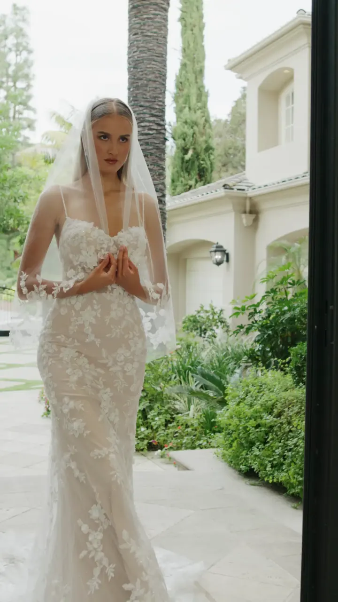

La maison
MADAMOON réunit à Paris les collections de cinq maisons. Une boutique, pas un atelier : la robe que vous choisissez est ensuite confectionnée à vos mesures, retouches comprises.
Découvrir le showroomNouveautés — Casablanca Bridal
Toutes les robes


Entrer par la coupe
Cinq coupes. Une seule vous va comme personne.


Le showroom
Le showroom est privatisé pour vous, une heure, sur rendez-vous. Venez accompagnée.
Les maisons
Elles l'ont vécu — fiche Google de la maison, 5,0 sur 200 avis
« J'ai visité deux autres magasins avant celui-ci et j'ai vu une vraie différence dans la qualité des tissus et le rendu général des robes. Loin des robes lourdes, ce sont des robes qu'on n'a pas envie d'enlever. »
L'édito
Choisir sa robe de mariée à Paris
Chercher une robe de mariée à Paris commence rarement par une robe. Cela commence par une heure : celle où le showroom du 234 rue du Faubourg Saint-Martin, dans le 10ᵉ, est fermé pour vous. On n'y essaie pas tout ; on y essaie ce qu'il faut, en commençant par la coupe qui vous ressemble, puis par la maison qui la fait le mieux.
MADAMOON est une boutique, pas une maison de couture : les soixante-sept modèles viennent de cinq créateurs choisis un à un — Watters Designs, Casablanca Bridal, Olya Mak, Monica Loretti — et de quelques ateliers indépendants. Chaque robe choisie est ensuite confectionnée à vos mesures, à partir de 1 500 €, retouches comprises.
Une sirène dessine la taille et les hanches ; une princesse assume le volume ; une robe fluide suit le mouvement ; un trapèze s'ouvre en A, la coupe la plus universelle ; une deux-en-un change d'allure entre la cérémonie et la soirée. Avant le goût, la morphologie décide souvent : c'est par elle que l'on vous conseille. Le premier rendez-vous se prend idéalement huit à neuf mois avant le mariage ; avec moins de temps, on trouve presque toujours une solution.
Rendez-vous